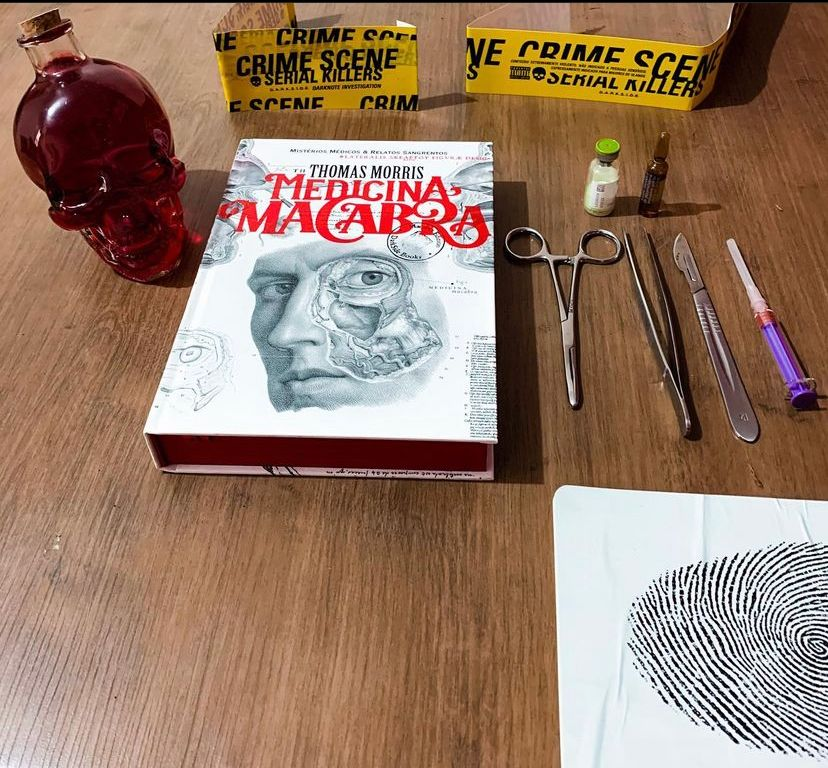

Medicina Macabra
Esqueça tudo que você sabe sobre a medicina moderna de hoje, exames computadorizados, criocirurgias, cirurgia robótica, e tudo mais que você consiga pensar. Antigamente não se tinha tecnologia e nem tantos estudos e experimentos a disposição dos médicos para que seus trabalhos se tornassem “mais fáceis”, menos dolorosos e em alguns casos inusitados, não mesmo?
Uma curiosa descoberta do Thomas Morris: pérolas divertidas e grotescas sobre casos bizarros escondidas entre dissertações cheias de linguagem técnica e textos desafiadoramente longos. Ele achou que muitos destes “relatos de casos” eram muitos bons para serem esquecidos, e ele decidiu fazer uma seleção irresistivelmente peculiar.
Com uma pitada de bom humor, Medicina Macabra nos traz relatórios reais de casos médicos documentados que vai desde a Rússia até a Holanda do século XVII e chega até um baleeiro no Pacífico! O livro tem uma narrativa leve e é conduzido de forma bem humorada até mesmo nos casos mais angustiantes, o autor tenta conduzir os capítulo de forma leve e bem explicativa. A edição como sempre está perfeita e cheia de detalhes com todo capricho que a darkside entrega, aqui pelo selo Macabra da editora. Antes de ler eu te pergunto apenas uma coisa:
ᴠᴏᴄê ᴛᴇᴍ ᴇsᴛôᴍᴀɢᴏ ғᴏʀᴛᴇ?🩸